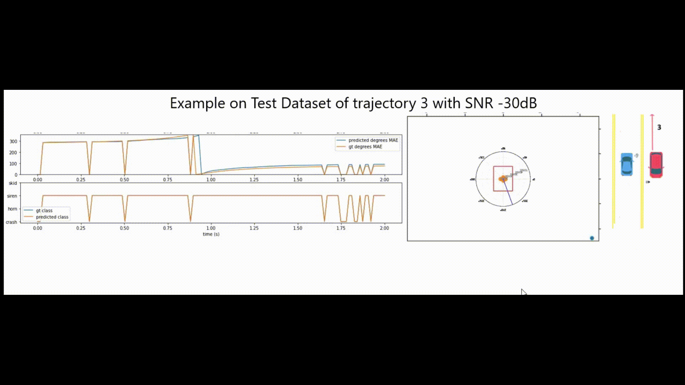
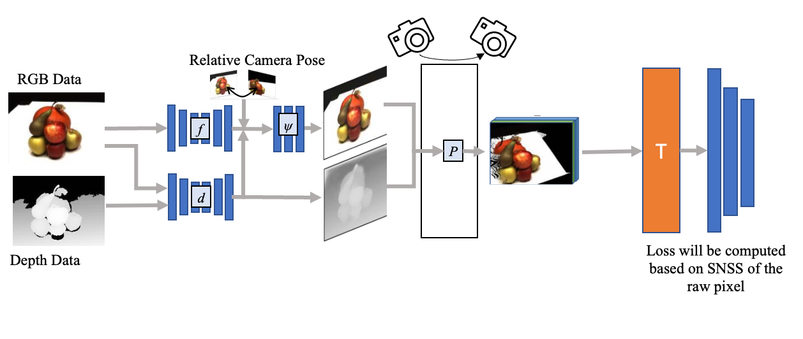

Hi there! 👋🏻
I'm Muhammad Raditya Giovanni
I study Planning, control, and localization for self-driving vehicles, using techniques from a variety of fields and sensors such as inverse kinematics, anomaly detection, sound localization, sound and image classification, microphones, RGB camera, and LIDAR.
Currently, I am a master student at Nagoya University and live in Japan. I will receive my master degree in Electronic, Electrical, and Informatics Engineering under Ubiquitous Computing Lab in September 2026, under the supervision of Prof. Nobuo Kawaguchi.
Any research collaborations are welcome!
Download CV (PDF)🔬 Research
Sound Localization and Classification for Self-driving Vehicle
Multiple Moving Agents Systems with physical multiple moving agents will be more and more common. My research questions are twofold: 1) explore the possibility of sound localization on self-driving vehicle, 2) physics data simulation for audio in urban environment.
Keywords: Self-driving vehicle, Sound Localization and Classification, Physics Simulation


VR Teleoperation System with Real-Time 3D Reconstruction
Developed a VR-based teleoperation system that enables intuitive control of a robotic arm with real-time 3D environment reconstruction.
Keywords: VR Teleoperation, 3D Reconstruction, Robotic Arm, Human-in-the-Loop, Spatial Perception

📚 Education
Master of Engineering
Nagoya University
May 2025 - September 2026
Department of Electronic, Electrical, and Informatics Engineering
Bachelor of Engineering
Nagoya University
October 2019 - September 2023
Department of Aerospace and Mechanical Engineering
📄 Publications

Anomalous Sound Localization and Classification in Urban Environments for Mobile Autonomous Vehicles
Authors: Muhammad Raditya Giovanni, Alexander Carballo, Kento Ohtani, Kazuya Takeda
Conference: 7th International Symposium on Future Active Safety Technology toward zero traffic accidents (FAST-Zero'23)
Date: November 2023
Conference Website👩💻 Work Experience
Control and Planning Engineer
TIER IV
2023 - Present | Nagoya, Japan
- Developed an interface between Autoware and CARLA in ROS2
- Improved geometrical calculations for spatial reasoning
- Created a new library to replace Boost::geometry functions
- Developed a trajectory evaluator

Autonomous Driving System Intern
Sony Honda Mobility
August 2025 - September 2025 | Tokyo, Japan
- Enhanced topology prediction with machine learning
- Deployed model on AWS
- Designed framework for route planning
⭐ Projects
These past works are not directly relevant to my research but they inspired me a lot.
Masked Audio Reconstruction using U-Net for Anomaly Detection
Developed a U-Net model to compute reconstruction error using Python, Keras, and TensorFlow-IO.
View →Arduino GPS Waypoint Autonomous Vehicle
Vehicle that autonomously navigates waypoints while avoiding obstacles.
View →Ball Tracking on Uneven Surface
Led team using OpenCV to identify and track balls via color selection and background subtraction.
View →🏅 Awards & Honors
Scholarships
- UFJ Trust Scholarship (May 2025 - September 2026) • ¥115,000/month
- MEXT Scholarship U2U (October 2019 - September 2023) • ¥120,000/month
Startup & Entrepreneurship
- Steply - Tongali Startup Program: Co-founded Steply with VLM for personalized travel itineraries. Selected to present at SXSW in February 2026.